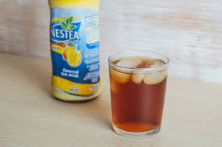
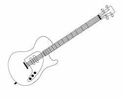
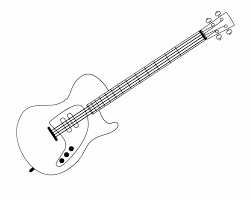

Valledor, John Leonard Mendoza

Information :
- Age : 20 years old
- Birthdate : October 10, 1999
- Birthplace : Paniqui, Tarlac
- Naitonality : Filipino
- Religion : Roman Catholic
Hobbies / Interest
- Basketball
- Mobile/Computer Online Games
- Music
- Foods
- Websites
- Sleep
- Instruments
- Phone Number : 09770120767
- Gmail : johnleonardvalledor8@gmail.com
- Facebook.com : John Leonard Mendoza Valledor
- Instagram : @justdavincii
I love playing basketball because it helps me to exercise my body and to be healthy.

Playing mobile/computer online games make my day complete. It gives me a relaxing moments, chillin' and it's my stress reliever.

Music is just like playing mobile/computer online games, it give me a relaxing moments, chillin' and it's my stress reliever. When I'm alone I put my earphone in my ears and play a music, it help me to remove my sadness. I love the old songs like the songs of scorpions, eagles, eric clapton, and etc.


I love eating man, but my body can't gain a fat even though I eat a lot of amount of foods. When Im stressed I going to store to buy some snacks. Foods is my everything. My favorite food that I always buy is junks foods with C2 or Lipton or Softdrinks.
Website becomes my interest because I amaze or I admire by the web designer. Someday I'm gonna be good on creating or designing a website and someday I'm going to create my first website that I'm the who design it.
Sleep have a biggest role in my life. If I don't consume 9+ hours sleep, I'm high, I can't focus on the things around me. The feeling you can't walk, you can't eat because you don't have enough sleep.

I start playing instruments when I was grade 7. The instruments that I play is guitar and bass. I want to learn piano someday because I think is cool. I chose to play guitar because I influence by sungha jung, his fingerstyle and there a lot of people who play guitar so I think it's time to me to learn how to play guitar.
 


"No man is really happy or safe without a hobby."
Contact & Social Media
You can contact me on this phone number and also you can contact me on my gmail, facebook, and instagram that included below.